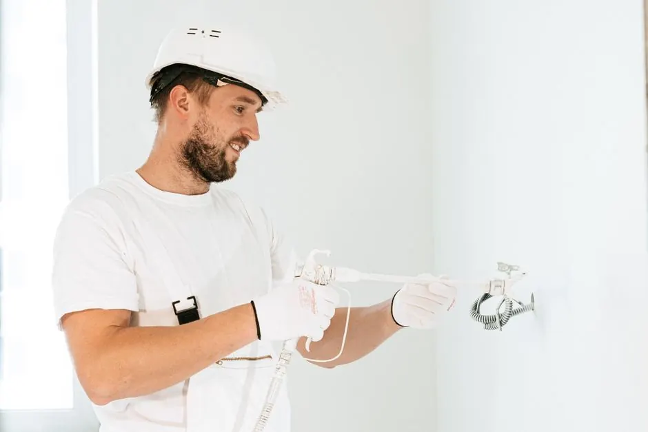
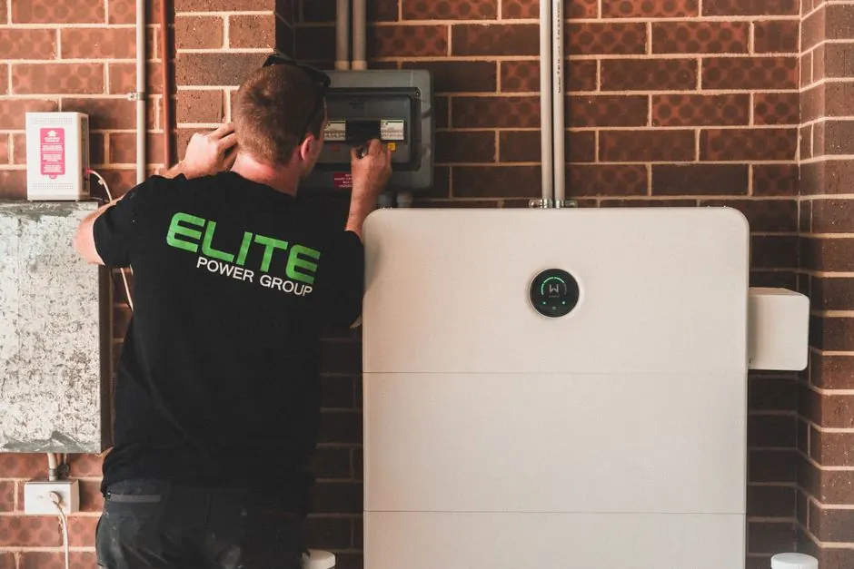

Bayfront Dryer Works
Sarasota, Florida • Mon–Fri 8:00 AM – 4:00 PM
Serving Central Sarasota & Bee Ridge Corridor
Dryer Repair Bee Ridge FL
From Proctor Road and McIntosh to Bee Ridge Park and surrounding residential subdivisions, our mobile repair vans deliver prompt, honest dryer repair across Bee Ridge. Whether your dryer is blowing cold air, squeaking, or refusing to turn on, we carry quality OEM-compatible replacement parts for prompt service.
Central Sarasota dispatchZIP 34233 coveragePrompt local appointments
Local Sarasota specialists
Fast, Honest Dryer Repair for Bee Ridge Homeowners
Bee Ridge is a vibrant, family-centered residential community where laundry appliances work overtime. When a heating element burns out, a thermal fuse blows, or a drive belt snaps, laundry quickly piles up.
Our Sarasota technicians know Bee Ridge neighborhoods inside and out. We arrive on time in fully-stocked service vehicles equipped with multimeters, thermal sensors, replacement coils, and heavy-duty belts to diagnose and fix your appliance on the initial visit without multiple service trips.
Explore Bee Ridge services
Bee Ridge central dispatchDirect mobile technicians serving Proctor Rd, Bee Ridge Rd, and McIntosh Rd.
Services available in Bee Ridge
Appliance Repair Services in Bee Ridge
In the Bee Ridge service area, we provide a variety of appliance repair services tailored to meet the needs of local residents. Our prompt service in Bee Ridge ensures that your appliances are up and running quickly.
01
Dryer Not Heating Repair
In Bee Ridge, we specialize in Dryer Not Heating Repair, addressing issues like faulty heating elements and thermostats. Our technicians are equipped to handle various dryer models, ensuring your appliance is back to optimal performance.
02Electric Dryer Repair
Electric Dryer Repair in Bee Ridge focuses on common problems such as dryers not starting or making loud noises. Our team uses the right tools and techniques to diagnose and fix issues efficiently.
03Dryer Belt Replacement
We offer Dryer Belt Replacement services in Bee Ridge, ensuring that your dryer operates smoothly. Whether you live in Bee Ridge Estates or near Bee Ridge Park, our team is ready to assist.
04Dryer Not Starting Repair
Our Dryer Not Starting Repair service in Bee Ridge addresses issues like blown fuses and power cord problems. We ensure that your dryer is up and running as soon as possible.
05Gas Dryer Repair
Gas Dryer Repair in Bee Ridge is crucial for homes using gas appliances. Our experienced technicians are skilled in diagnosing and fixing gas-related issues safely and efficiently.
More than a service list
How We Execute Dryer Repair in Bee Ridge
In the Bee Ridge service area, we adhere to local codes and regulations while providing appliance repair services. The climate in Sarasota can lead to specific issues, such as dryers not heating properly due to humidity.
High humidity affecting appliance performance
High humidity levels can cause dryers to malfunction, leading to issues like clothes not drying properly. How we help: We use specialized tools to assess humidity-related problems and recommend solutions tailored to the local climate.
Older home appliances
Many homes in Bee Ridge have older appliances that are more prone to breakdowns and require frequent repairs. How we help: Our technicians are experienced in working with older models, ensuring that repairs are done efficiently and correctly.
Access to multi-story homes
Some homes in Bee Ridge are multi-story, making it challenging to access tight laundry closets and multi-story layouts. How we help: We have the right equipment and trained staff to safely navigate these situations, ensuring minimal disruption.
Early warning signs
Signs You Need Dryer Repair in Bee Ridge
A small visible symptom can point to a bigger pattern.
Dryer not heating properly
Defective heating elements, failed thermal cut-offs, or faulty cycling thermostats preventing adequate heat generation.
Loud noises during operation
Worn drum support rollers, damaged idler pulleys, or loose blower wheels causing squealing, thumping, or grinding sounds.
Clothes taking longer to dry
Restricted exterior venting ducts, lint accumulation, or faulty moisture sensors leading to extended drying cycles.
Burning smell while drying
Lint buildup contacting internal heating elements, slipping drive belts, or failing motor bearings creating severe friction heat.
Transparent Estimates
Upfront Pricing for Dryer Repair in Bee Ridge
In the Bee Ridge service area, we believe in 100% transparent pricing. Every service visit begins with a thorough diagnostic assessment, followed by a clear, upfront written quote before any repair work starts. No hidden fees, no surprise add-ons.
Type of repair needed
The complexity of the repair, such as replacing a dryer belt versus fixing a heating element, affects the overall cost.
Parts availability
If specific parts are needed for your appliance, availability can influence the time and cost of the repair.
Age of the appliance
Older appliances may require more extensive repairs or parts that can increase the overall cost.
We know the route
Landmarks and Points of Interest in Bee Ridge
Navigating the Bee Ridge service area is easy thanks to well-known landmarks like Bee Ridge Park and the Sarasota Square Mall. These locations help our team efficiently reach customers by providing familiar reference points. Additionally, the Bee Ridge Library serves as a community hub, allowing us to connect with residents nearby.
Bee Ridge Park
Bee Ridge Park is a central location that helps us navigate the area and reach nearby homes quickly.
Sarasota Square Mall
The Sarasota Square Mall is an easily identifiable landmark that assists our technicians in finding residential streets in the vicinity.
Bee Ridge Library
The Bee Ridge Library is a community center that allows us to engage with locals and understand their appliance needs better.
Bee Ridge service coverage
Is your ZIP on the route?
These are our most frequently served ZIP codes. Nearby areas may also qualify — call if you do not see yours.
34233
Popular neighborhoods: Bee Ridge Estates · Bee Ridge Park · Bee Ridge Heights · Bee Ridge West
Check my address →
1234
Primary Bee Ridge response zoneRoute response depends on current call volume, technician availability, and required equipment.
Outside Bee Ridge?
Nearby Cities We Serve
Bee Ridge Appliance FAQ
Frequently Asked Questions for the Bee Ridge service area
A real dispatcher is available if your question is not answered here.
Call 941 288 9768Do you serve Bee Ridge?
Yes, we proudly serve the Bee Ridge service area, providing a range of appliance repair services tailored to local needs.
What are your hours of operation in Bee Ridge?
Our dispatch operates Monday–Friday, 8:00 AM to 4:00 PM, offering prompt service during business hours.
How quickly can you provide service in Bee Ridge?
We offer prompt service in Bee Ridge during working hours, scheduling service visits efficiently.
What types of dryers do you repair in Bee Ridge?
We repair all types of dryers, including electric and gas models, addressing issues such as heating failures and mechanical problems.
Are your technicians experienced with all major dryer brands?
Yes, our technicians are trained and experienced in servicing all major gas and electric dryer brands safely and efficiently.
Bee Ridge dispatch is ready
Need Dryer Repair Sarasota FL Today?
Contact us for fast and reliable dryer repair services. Our team is ready to help you get your appliance running smoothly again.

Talk with the local team
Request Bee Ridge service
We're here to help! Reach out to us for any dryer repair needs. Our team is available during business hours to assist you.
Instant Phone Dispatch
Call Directly for Immediate Service
No waiting for email replies or form submissions. Speak directly with our local Sarasota dispatch team to confirm technician availability and service appointment times.
- Equipped Service Vans: Stocked with common dryer parts
- Upfront Quotes: Clear diagnostic estimates before work
- All Brands Serviced: Electric & gas dryer specialists
- Local Dispatch: Originating from 3856 Yellowstone Cir